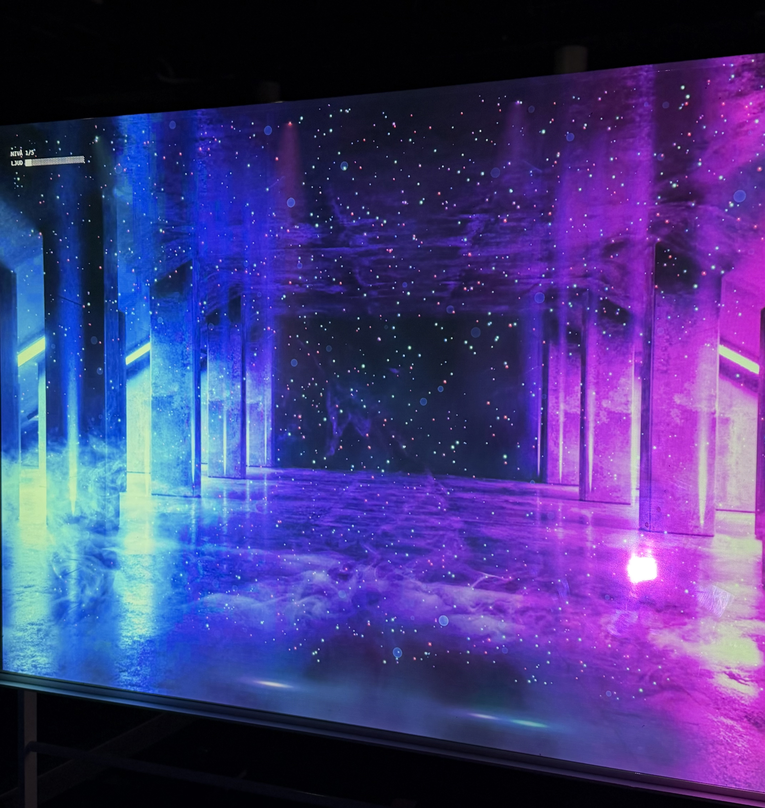
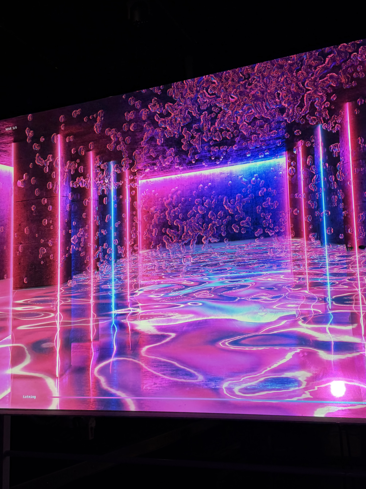
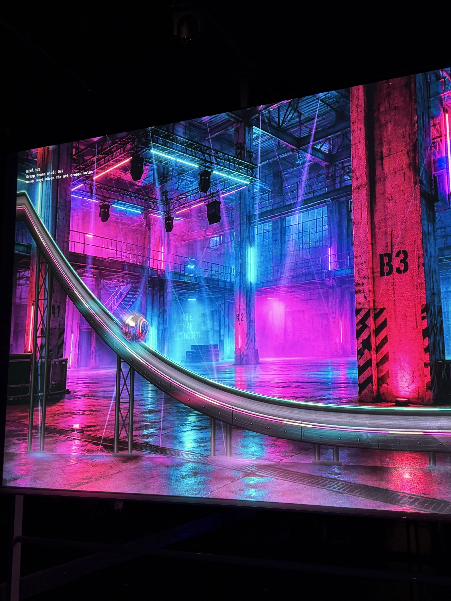
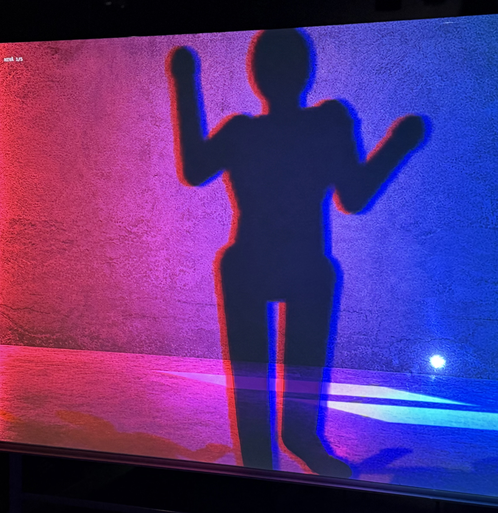
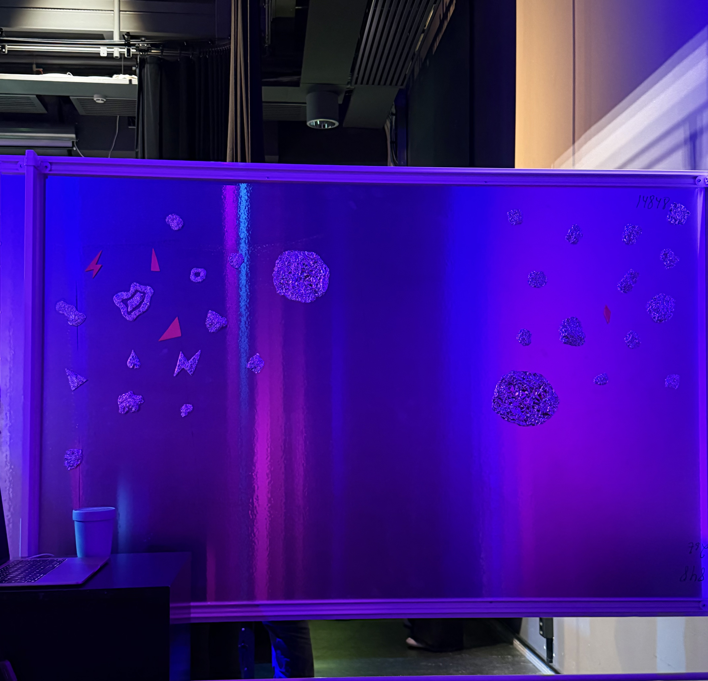

OUT OF ORDER
Fyra världar där fysiken långsamt slutar fungera som den ska. Rör dig, klappa, luta och greppa, och se vad som händer när reglerna går sönder.
-
VÄRLD 01
Gravitation
Klappa dina händer. Se hur partiklarna svarar när tyngdkraften ändras.
-
VÄRLD 02
Vatten
Luta glaset och häll. Vattnet förändras för varje nivå i hallen.
-
VÄRLD 03
Friktion
Greppa kulan med handen, släpp den och se hur friktionen ändrar rörelsen.
-
VÄRLD 04
Skugga
Rör dig framför kameran. Se hur din skugga sviker dig.





OM
Installationen
OUT OF ORDER är en interaktiv installation med fyra världar: gravitation, vatten, friktion och skugga. Varje värld utgår från en fysikalisk regel som besökaren kan påverka med kropp, röst eller föremål. Vi ville utforska vad som händer när fysikens självklara regler slutar fungera. Världarna börjar välbekant, men förskjuts gradvis tills det självklara blir osäkert.
Styrning och teknik
Gravitation styrs med mikrofon och klapp, vatten genom att luta ett glas med micro:bit via Bluetooth, och friktion och skugga med kamera som följer hand respektive kropp. Webbaserad, byggd med bland annat p5.js, WebGL och Web Audio.
Vem är jag
Jag heter Hanna och arbetar mellan grafisk design och interaktion, med fokus på sammanhängande visuell identitet där färg, form och rörelse samspelar. Målet: besökaren ska känna världen, inte bara se den.